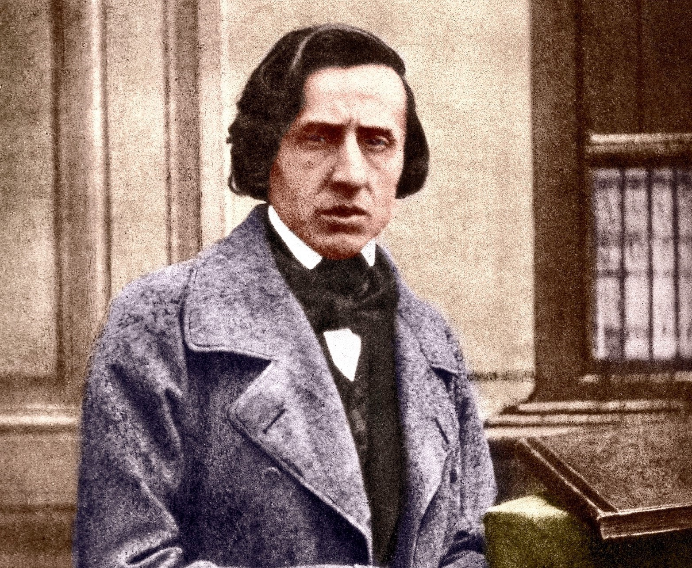
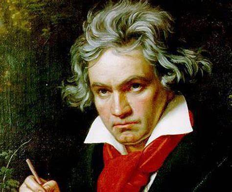
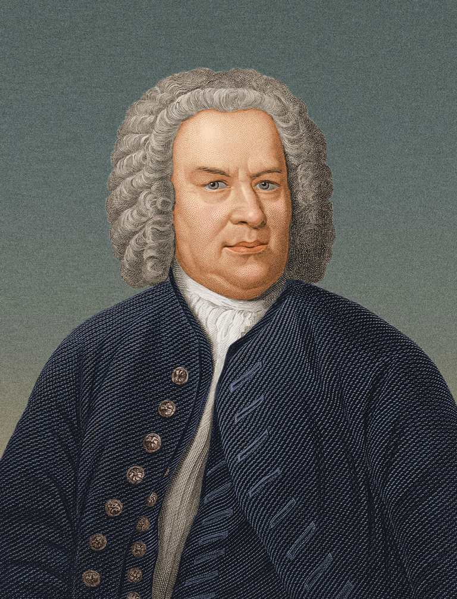

17th July, 2022
Who is Chopin?
Frédéric François Chopin was born in 1st March 1810, he was Polish composer and virtuoso pianist of the Romantic period, wrote primarily for solo piano. He has maintained worldwide renown as a leading musician of his era, one whose "poetic genius was based on a professional technique that was without equal in his generation".
Chopin was born in Żelazowa Wola in the Duchy of Warsaw and grew up in Warsaw, which in 1815 became part of Congress Poland. A child prodigy, he completed his musical education and composed his earlier works in Warsaw before leaving Poland at the age of 20, less than a month before the outbreak of the November 1830 Uprising. At 21, he settled in Paris. Thereafter – in the last 18 years of his life – he gave only 30 public performances, preferring the more intimate atmosphere of the salon. He supported himself by selling his compositions and by giving piano lessons, for which he was in high demand. Chopin formed a friendship with Franz Liszt and was admired by many of his other musical contemporaries, including Robert Schumann....

18th July, 2022
Ludwig van Beethoven - A genius classical composer of all times
Ludwig van Beethovenwas born in 17 December 1770, he was a German composer and pianist. Beethoven remains one of the most admired composers in the history of Western music; his works rank amongst the most performed of the classical music repertoire and span the transition from the Classical period to the Romantic era in classical music. His career has conventionally been divided into early, middle, and late periods. His early period, during which he forged his craft, is typically considered to have lasted until 1802. From 1802 to around 1812, his middle period showed an individual development from the styles of Joseph Haydn and Wolfgang Amadeus Mozart, and is sometimes characterized as heroic. During this time, he began to grow increasingly deaf. In his late period, from 1812 to 1827, he extended his innovations in musical form and expression.
Beethoven was born in Bonn. His musical talent was obvious at an early age. He was initially harshly and intensively taught by his father Johann van Beethoven. Beethoven was later taught by the composer and conductor Christian Gottlob Neefe, under whose tutelage he published his first work, a set of keyboard variations, in 1783. He found relief from a dysfunctional home life with the family of Helene von Breuning, whose children he loved, befriended, and taught piano. At age 21, he moved to Vienna, which subsequently became his base, and studied composition with Haydn. Beethoven then gained a reputation as a virtuoso pianist, and he was soon patronized by Karl Alois, Prince Lichnowsky for compositions, which resulted in his three Opus 1 piano trios (the earliest works to which he accorded an opus number) in 1795...

19th July, 2022
Johann Sebastian Bach - A legendary is immortal
Johann Sebastian Bachwas born in 31 March 1685, he was a German composer and musician of the late Baroque period. He is known for his orchestral music such as the Brandenburg Concertos; instrumental compositions such as the Cello Suites; keyboard works such as the Goldberg Variations and The Well-Tempered Clavier; organ works such as the Schubler Chorales and the Toccata and Fugue in D minor; and vocal music such as the St Matthew Passion and the Mass in B minor. Since the 19th-century Bach revival he has been generally regarded as one of the greatest composers in the history of Western music.
The Bach family already counted several composers when Johann Sebastian was born as the last child of a city musician in Eisenach. After being orphaned at the age of 10, he lived for five years with his eldest brother Johann Christoph, after which he continued his musical education in Lüneburg. From 1703 he was back in Thuringia, working as a musician for Protestant churches in Arnstadt and Mühlhausen and, for longer stretches of time, at courts in Weimar, where he expanded his organ repertory, and Köthen, where he was mostly engaged with chamber music. From 1723 he was employed as Thomaskantor (cantor at St Thomas's) in Leipzig. There he composed music for the principal Lutheran churches of the city, and for its university's student ensemble Collegium Musicum. From 1726 he published some of his keyboard and organ music. In Leipzig, as had happened during some of his earlier positions, he had difficult relations with his employer, a situation that was little remedied when he was granted the title of court composer by his sovereign, Augustus III, Elector of Saxony and King of Poland, in 1736. In the last decades of his life he reworked and extended many of his earlier compositions. He died of complications after eye surgery in 1750 at the age of 65....